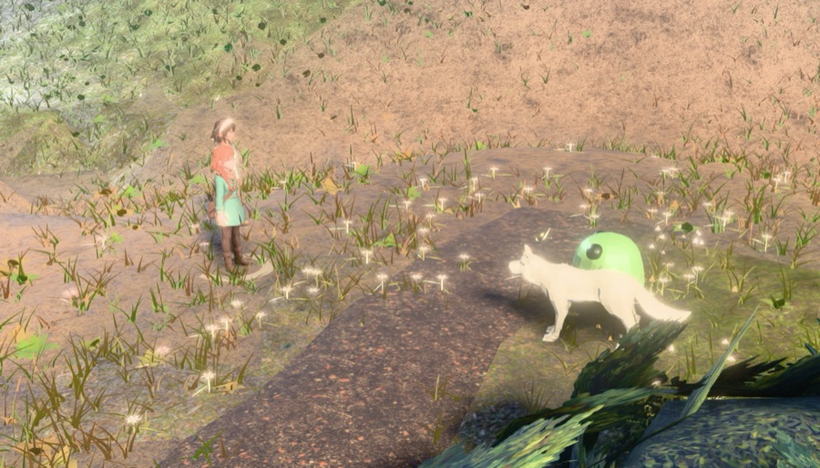
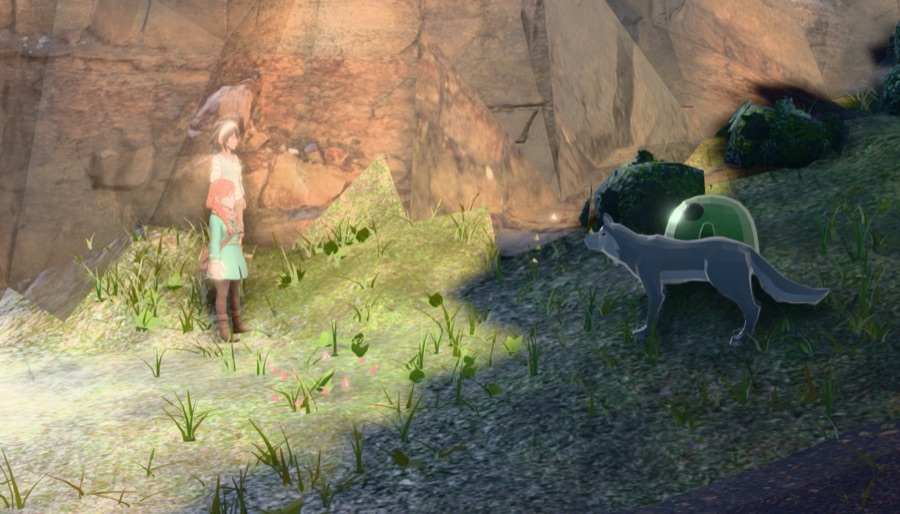
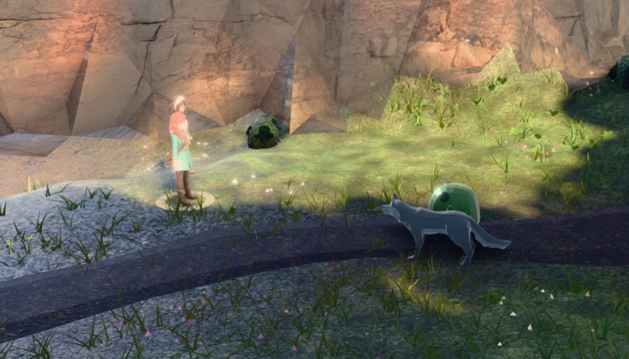
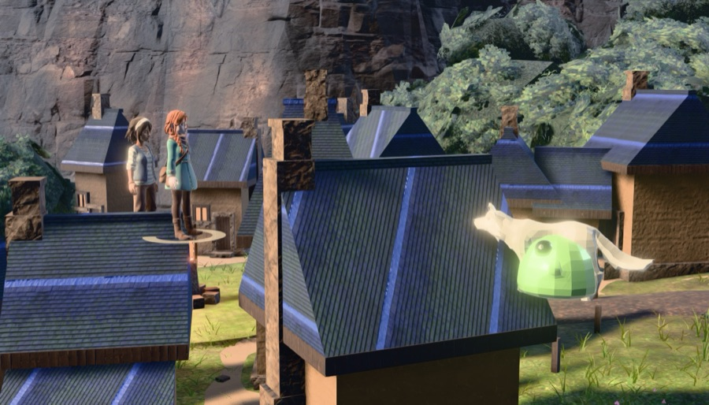
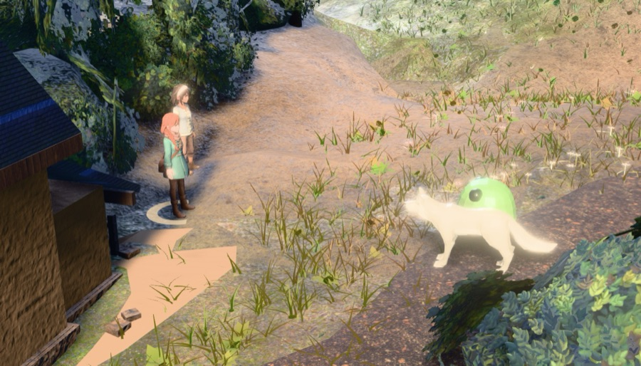
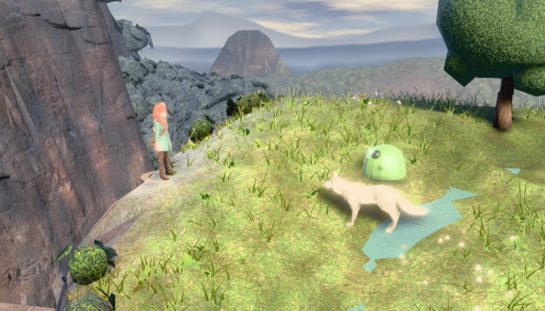
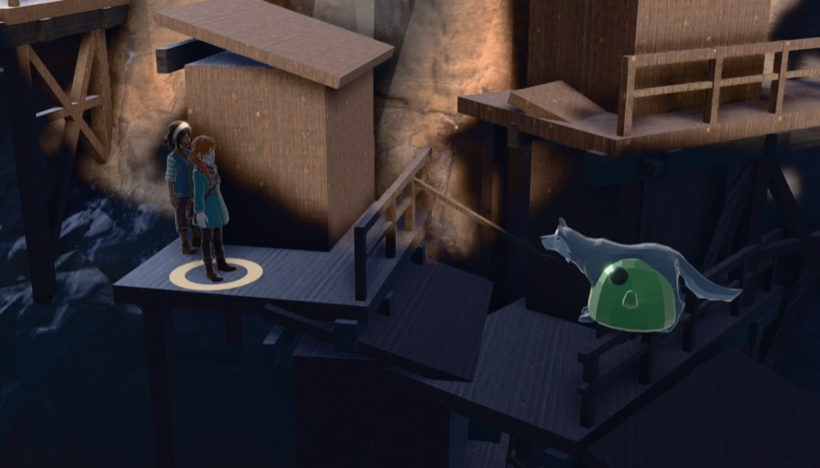
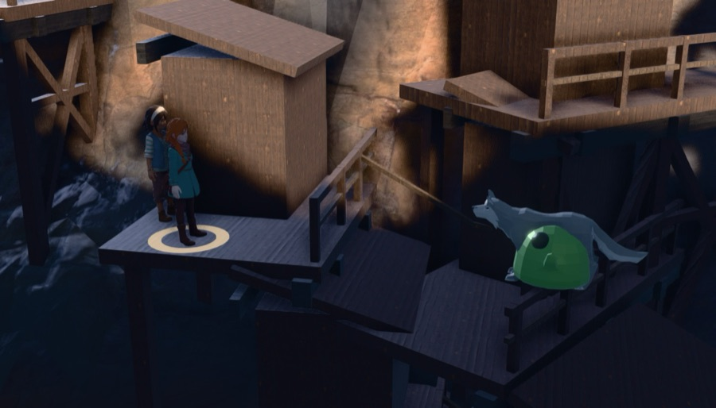
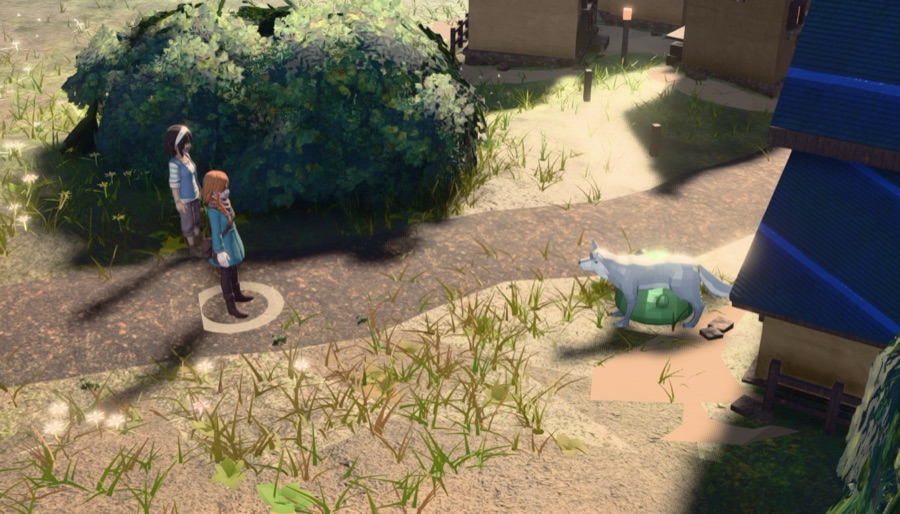

?arena=world&brim=1A SPIKE. Nothing here is default: ?arena=world is opt-in and brim is off inside it.
Both census arms are one build with one assignment between them
(battle_decide --mode=census --brim=off|auto), read by
tools/battle_place_lib.mjs — the same object every prior lane in this arc read.
battle_rim --mode=stability): the shared meter's edgeRGB spread
1.52, its bandMin spread
1.14, and at native resolution
2.81 / 6.21;
the background ring luminance itself moved 4.6.
The staging is reproducible (site ring and mask pixel count agree to four figures across
repeats) — the frame is not, because the valley keeps animating.
So a single-site delta under about 1.5 edgeRGB is noise, in this lane and in every
earlier lane that read one frame per site.62 sites in both arms (62 / 62 staged). Same relocation ring 62/62, same boom pitch 62/62, same lens 62/62. The cue is pinned OFF during TONE's two probe passes for exactly this reason: with it armed, a darkened silhouette scored a different boom and the two arms photographed different cameras.
Mean edgeRGB 9.27 → 10.89;
mean bandMin (the worst band of the cast, never the mean)
7.16 → 7.98.
Sites moving more than the one-battle spread: 24 better, 2 worse, 36 inside the noise.
| site | zone | edgeRGB off | edgeRGB on | Δ | bandMin off | bandMin on | polarity | mats patched | leaked |
|---|---|---|---|---|---|---|---|---|---|
| s000 | water | 6.49 | 7.14 | 0.65 | 9.02 | 8.57 | dark | 12 | 0 |
| s001 | forest | 9.92 | 14.67 | 4.75 | 6.84 | 6.11 | add | 12 | 0 |
| s002 | forest | 6.28 | 5.91 | -0.37 | 4.67 | 4.87 | add | 12 | 0 |
| s003 | water | 22.49 | 26.78 | 4.29 | 8.82 | 14.05 | add | 12 | 0 |
| s004 | crag | 6.69 | 9.25 | 2.56 | 5.59 | 7.20 | add | 12 | 0 |
| s005 | forest | 4.58 | 7.72 | 3.14 | 2.88 | 4.44 | add | 12 | 0 |
| s006 | crag | 14.56 | 16.49 | 1.93 | 7.78 | 8.90 | dark | 12 | 0 |
| s007 | meadow | 15.29 | 19.33 | 4.04 | 4.38 | 3.05 | add | 12 | 0 |
| s008 | crag | 3.28 | 2.28 | -1.00 | 3.19 | 2.53 | add | 12 | 0 |
| s009 | forest | 6.33 | 5.72 | -0.61 | 5.60 | 3.24 | add | 12 | 0 |
| s010 | meadow | 3.06 | 2.98 | -0.08 | 5.03 | 3.73 | add | 12 | 0 |
| s011 | meadow | 7.50 | 6.05 | -1.45 | 5.74 | 8.49 | add | 12 | 0 |
| s012 | forest | 9.88 | 12.97 | 3.09 | 1.21 | 1.36 | add | 12 | 0 |
| s013 | meadow | 5.86 | 5.78 | -0.08 | 2.80 | 2.12 | none | 12 | 0 |
| s014 | meadow | 5.73 | 6.89 | 1.16 | 6.62 | 8.57 | add | 12 | 0 |
| s015 | water | 5.31 | 4.86 | -0.45 | 0.79 | 3.08 | add | 12 | 0 |
| s016 | forest | 12.75 | 12.91 | 0.16 | 7.55 | 7.66 | dark | 12 | 0 |
| s017 | meadow | 12.61 | 8.76 | -3.85 | 3.17 | 3.06 | add | 12 | 0 |
| s018 | crag | 5.29 | 4.99 | -0.30 | 4.34 | 3.29 | none | 12 | 0 |
| s019 | meadow | 11.58 | 7.73 | -3.85 | 19.03 | 13.74 | add | 12 | 0 |
| s020 | meadow | 1.90 | 2.00 | 0.10 | 5.44 | 4.68 | none | 12 | 0 |
| s021 | meadow | 10.16 | 12.49 | 2.33 | 6.37 | 5.99 | dark | 12 | 0 |
| s022 | forest | 26.24 | 31.89 | 5.65 | 10.82 | 16.12 | add | 12 | 0 |
| s023 | forest | 8.96 | 9.74 | 0.78 | 9.02 | 8.73 | dark | 12 | 0 |
| s024 | forest | 10.46 | 17.54 | 7.08 | 5.05 | 9.74 | add | 12 | 0 |
| s025 | forest | 5.05 | 4.04 | -1.01 | 3.38 | 5.51 | add | 12 | 0 |
| s026 | meadow | 1.79 | 1.62 | -0.17 | 2.56 | 2.54 | add | 12 | 0 |
| s027 | crag | 20.96 | 27.45 | 6.49 | 17.92 | 23.62 | add | 12 | 0 |
| s028 | meadow | 8.81 | 11.87 | 3.06 | 5.89 | 5.19 | add | 12 | 0 |
| s029 | water | 6.37 | 7.17 | 0.80 | 3.88 | 3.91 | add | 12 | 0 |
| s030 | water | 5.42 | 5.52 | 0.10 | 7.64 | 9.41 | add | 12 | 0 |
| s031 | meadow | 1.83 | 1.56 | -0.27 | 3.13 | 3.27 | add | 12 | 0 |
| s032 | water | 27.86 | 33.17 | 5.31 | 14.31 | 17.66 | add | 12 | 0 |
| s033 | crag | 2.88 | 2.96 | 0.08 | 3.71 | 3.31 | add | 12 | 0 |
| s034 | meadow | 4.51 | 4.37 | -0.14 | 3.56 | 6.57 | add | 12 | 0 |
| s035 | crag | 6.52 | 13.42 | 6.90 | 8.11 | 2.59 | add | 12 | 0 |
| s036 | forest | 6.80 | 6.57 | -0.23 | 2.91 | 4.05 | add | 12 | 0 |
| s037 | meadow | 4.34 | 7.60 | 3.26 | 10.13 | 14.84 | add | 12 | 0 |
| s038 | crag | 9.76 | 11.08 | 1.32 | 7.49 | 5.70 | add | 12 | 0 |
| s039 | meadow | 11.74 | 11.21 | -0.53 | 6.26 | 10.68 | add | 12 | 0 |
| s040 | crag | 25.77 | 34.74 | 8.97 | 13.62 | 16.85 | add | 12 | 0 |
| s041 | meadow | 5.40 | 5.68 | 0.28 | 2.98 | 2.50 | dark | 12 | 0 |
| s042 | meadow | 10.95 | 10.22 | -0.73 | 8.46 | 11.84 | add | 12 | 0 |
| s043 | water | 18.30 | 25.37 | 7.07 | 12.77 | 22.51 | add | 12 | 0 |
| s044 | forest | 1.47 | 1.74 | 0.27 | 1.31 | 1.21 | dark | 12 | 0 |
| s045 | meadow | 5.48 | 6.63 | 1.15 | 8.12 | 7.92 | dark | 12 | 0 |
| s046 | meadow | 4.62 | 3.63 | -0.99 | 17.83 | 18.76 | dark | 12 | 0 |
| s047 | meadow | 9.15 | 9.78 | 0.63 | 6.39 | 7.19 | dark | 12 | 0 |
| s048 | forest | 5.43 | 5.56 | 0.13 | 9.99 | 9.36 | dark | 12 | 0 |
| s049 | meadow | 3.61 | 3.70 | 0.09 | 4.25 | 4.29 | add | 12 | 0 |
| s050 | meadow | 10.15 | 11.28 | 1.13 | 10.74 | 8.30 | dark | 12 | 0 |
| s051 | meadow | 11.30 | 13.81 | 2.51 | 9.23 | 8.65 | dark | 12 | 0 |
| s052 | meadow | 8.19 | 13.29 | 5.10 | 8.06 | 10.01 | add | 12 | 0 |
| s053 | crag | 8.24 | 11.08 | 2.84 | 7.43 | 9.13 | add | 12 | 0 |
| s054 | forest | 11.48 | 13.22 | 1.74 | 17.83 | 18.73 | dark | 12 | 0 |
| s055 | forest | 12.43 | 18.39 | 5.96 | 1.80 | 2.69 | add | 12 | 0 |
| s056 | crag | 1.33 | 1.63 | 0.30 | 3.82 | 3.59 | add | 12 | 0 |
| s057 | meadow | 7.37 | 9.46 | 2.09 | 2.75 | 1.47 | add | 12 | 0 |
| s058 | forest | 9.85 | 8.56 | -1.29 | 8.00 | 6.49 | none | 12 | 0 |
| s059 | meadow | 11.52 | 12.01 | 0.49 | 9.20 | 9.06 | dark | 12 | 0 |
| s060 | meadow | 2.52 | 2.55 | 0.03 | 7.61 | 6.90 | add | 12 | 0 |
| s061 | forest | 32.52 | 40.26 | 7.74 | 19.40 | 25.04 | add | 12 | 0 |
edgeRGB < 5 went 14 → 15, bandMin < 3
went 10 → 9, and the worst band in the whole census went 0.79 → 1.21 — still zero.
This is the same shape the placement lane found when it measured edgeRGB across sites and it
ran backwards: a lit body against near-black is enormous RGB contrast, and adding light to a body that is
already separated separates it further. The sites that fail do so because the body sits at the terrain's
own value in shadow, and multiplying a shadowed albedo by 0.45 moves almost nothing.The numbers are for iteration; these are the verdict. Every pair below was looked at.









| what | measured |
|---|---|
flag off (no arena in the URL, module injected anyway) | BattleWorld frozen, on:false installed:false,
BattleStage3D unpatched, a real battle answered by the DIORAMA, 0 of 77 scene materials marked —
battle_rim --mode=regress, regress.json |
?arena=world without brim | 62/62 sites staged in the same ring at the same
pitch and the same lens as the arm with it on; rim().patched 0 and polarity null on every row |
| material leak into the field | 0 at every one of 62 sites (rim().shared, which walks the
live scene for a non-battle mesh holding a patched material). The cast's graph is re-parsed per body by
loadGlb, so no field object can share it. |
| teardown | geometries Δ0, programs return to their pre-battle count, canvases Δ0, on all three arms. Textures Δ+4 identically in every arm including OFF — pre-existing, not this cue. |
| fps (rAF-counted, vsync off, alternating passes) | off 241.2 / 240.9 → on 240.4 / 240.4 — −0.3%. One extra program, no extra draw call, no extra triangle. |
| ray budget | W = 2 / 9761, GREEN, unchanged — the cue adds no geometry by construction. |
| gates | battle_sim ALL ENVELOPES GREEN · encounter_sim GREEN · economy_test 228/0 · arena_playtest GREEN · transition_test 168 ok / 0 failed |
The world arena's zero-shader property is what DELETES the r185 colour-management class here. This spike
re-opens it, and here is exactly how far. The cue adds to totalEmissiveRadiance and multiplies
diffuseColor.rgb at #include <emissivemap_fragment> — after
normal_fragment_begin, before lights_physical_fragment. That is
radiance in the working space: the same variable every light's contribution lands in, with
tonemapping_fragment and colorspace_fragment running after it exactly as they do for
the sun. It allocates no render target, reads no pixel back and encodes nothing, so the rule that bit
TONE — a non-XR target holds LINEAR bytes whatever its texture declares, and OutputPass is not in that
loop — cannot reach this path. The only value that must be in the right space is the colour, and
THREE.Color converts a hex on assignment with ColorManagement on, so the uniform is uploaded
linear with no hand convertSRGBToLinear — adding one would be the double conversion
the runtime notes warn about. IU() is untouched; no light was added or scaled.
What is NOT proved: ow-* ships NoToneMapping, so an added 0.30 linear encodes to ~0.58
display and the ladder's blow-out at 0.70 is that arithmetic, not a bug — but on any scene that later
turns tone mapping ON, this constant means something different, and nothing here gates that.
off arm 2026-08-09T10:28:29.197Z · on arm 2026-08-09T10:33:18.879Z · three r185 · yaw pinned -1.4869